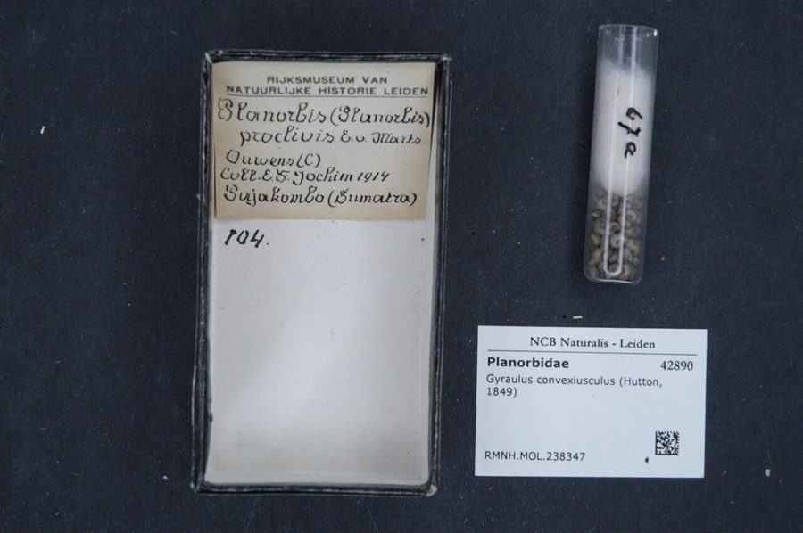

छोटा घोंघाSmall Ramshorn Snail
Gyraulus convexiusculus · Planorbidae · MOL-0013

- Scientific name
- Gyraulus convexiusculus (Hartmann, 1821)
- Family
- Planorbidae
- Hindi
- छोटा घोंघा
- Local names
- chhota ghongha, chakra ghongha, pani ka ghongha, small ramshorn
- Status here
- native
- IUCN
- not evaluated
- Review
- audited and independently read
When to look कब देखें
Present all year.
छोटा घोंघा / Small Ramshorn Snail
Gyraulus convexiusculus (Hartmann, 1821) — Planorbidae
छोटा घोंघा — धान के खेतों, गड्ढों और नहरों में मिलने वाला एक बेहद छोटा, चपटा, गोल घोंघा जिसका खोल बिल्कुल रामायण की 'शंख' जैसा (ramshorn) दिखता है, पर बहुत छोटा। यह घोंघा पानी में तैरता-तैरता घास पर चिपक जाता है और शैवाल खरोंचता है। इसका खोल पूरी तरह सपाट, गोल-घुमावदार, कभी भूरा कभी हरा। इसकी खतरनाक बात यह है कि इसके अंदर एक ख़तरनाक कीड़ा (parasite) रहता है जो सर्कारिया नाम का बीमारी का कीड़ा (cercariae) छोड़ता है, जो पानी में तैरते हैं और गाँव के लोगों की कमर, पेट और पैरों में सूजन (schistosomiasis) पैदा कर सकते हैं। पर भारत में यह बीमारी बहुत दुर्लभ है। इसका मुख्य खतरा अब दूसरे कीड़े (fasciolid flukes) को फैलाना है।
Quick Identification त्वरित पहचान
| Feature | Description |
|---|---|
| Size | Shell diameter 5–8 mm (very small) |
| Shape | Flattened, disc-shaped, coiled in a plane (planorbid form) |
| Colour | Light brown to greenish-brown; darker at the centre; translucent |
| Surface | Smooth, glossy; no distinct sculptural features |
| Aperture | Small, oblique, semi-lunar (half-moon-shaped) |
| Spire | Completely flattened (planispiral); no raised spire |
| Habitat | Floating on pond plants, clinging to aquatic vegetation, or on pond bottom |
| Behaviour | Algae grazer; moves slowly over plant surfaces |
Field tip: A very small (5–8 mm), flattened, disc-shaped snail with a coiled shell resembling a tiny ram's horn. Found on aquatic plants and pond sediments in rice paddies and ditches. The snail moves slowly and methodically over plant surfaces, grazing on algae. Most visible during monsoon when ponds are full.
हिंदी — कैसे पहचानें: बहुत छोटा, चपटा, गोल, शंख जैसा लेकिन बेहद पतला। पानी की पत्तियों पर चिपका। हल्का भूरा या हरा। पूरी तरह चपटा, कोई उभार नहीं।
Morphology आकारिकी
Biometrics (typical measurements):
| Measurement | Range |
|---|---|
| Shell diameter | 5–8 mm |
| Shell height | 2–3 mm |
| Number of whorls | 3–4 |
| Body length when extended | 8–12 mm |
Shell: Extremely small and flattened, coiled in a plane (the defining feature of Planorbidae). The shell is composed of 3–4 whorls that increase gradually in size from the centre outward. The entire shell is depressed (flattened) so that when viewed from above, it appears as a perfect spiral disc.
Coloration: The shell is typically light brown to greenish-brown, darker at the centre (centre of the spiral) and lighter at the periphery. Some individuals have a faint radiating pattern of colour bands.
Aperture: Small and oblique, semi-lunar in shape (half-moon). The peristome (outer lip) is simple and not flared.
Surface texture: Smooth and glossy, without prominent sculptural ridges or grooves.
Radula: Like other herbivorous snails, bears numerous small teeth adapted for scraping algae from plant surfaces.
Body colour: The soft body (when extended) is typically pale grey or translucent white.
हिंदी: खोल बहुत छोटा, चपटा, डिस्क जैसा, शंख की तरह घुमावदार। हल्का भूरा या हरा। मुँह अर्धचंद्र जैसा। बिल्कुल चिकना, कोई खुरदुरापन नहीं।
Behaviour & Ecology व्यवहार और पारिस्थितिकी
Grazer of aquatic vegetation. Feeds on periphyton (algal films) and diatoms coating aquatic plants, particularly grasses and sedges. The small mouth and specialized radula are perfectly adapted for this diet.
Climber and floater. Despite its small size, can climb aquatic plant stems. When disturbed, can produce a film of mucus that allows the snail to float, using surface tension to travel horizontally across the water surface (rarely).
Cryptic and abundant. Lives attached to submerged plant leaves and stems, where its small size and coloration provide excellent camouflage. Populations can be very dense in suitable habitat.
Reproduction. Hermaphroditic, like all planorbid snails. Cross-fertilization is typical. Eggs are laid in gelatinous clusters on plant surfaces or substrates. Development is direct; tiny snails emerge from eggs.
Parasite host. Intermediate host for parasitic flukes (trematodes), particularly fasciolid and schistosomatid cercariae. The snail becomes infected when cercariae-producing miracidia (larvae) penetrate the snail's foot.
Life Cycle / Phenology जीवन चक्र
| Stage / season | Event |
|---|---|
| Year-round | Feeding on algae; reproduction (when conditions permit) |
| June–September | Peak population growth during monsoon high-water periods |
| July–August | Peak egg-laying; clusters visible on plant surfaces |
| 2–4 weeks | Egg development; tiny snails emerge |
| 3–6 months | Growth to mature size; first reproduction |
| Lifespan | 1–2 years; shorter when infected with parasites |
Host Plants or Prey आहार
Primary diet:
- Algae and diatoms on aquatic plants
- Decaying plant material and detritus
- Bacteria and microorganisms
Feeding method: Grazes on substrate using radula; moves slowly over plant surfaces, consuming algal films.
Predators / Natural Enemies शत्रु
- Fish: Cyprinids, other small fish species
- Birds: Indian Pond Heron, Spotted Owlet, ducks, herons
- Amphibians: Asian Common Toad, frogs, tadpoles
- Parasites: Trematode flukes (internal parasites)
Agricultural / Human Relevance कृषि प्रासंगिकता
Disease vector concern. The small ramshorn snail is an intermediate host for parasitic trematode flukes, some of which are medically significant. Historically, the snail was known to transmit schistosomiasis (bilharzia), a serious parasitic disease, though this is now rare in India. More commonly, the snail hosts fasciolid flukes that infect livestock, causing economic loss to farmers.
Livestock disease. Fasciolosis (infection with Fasciola flukes) causes anemia and weight loss in sheep, goats, and cattle. Infected snails are the stage in which parasite development occurs; livestock become infected by eating plants with cercariae.
Human health. While human infections with flukes from this snail are uncommon in India, they occur in other parts of Asia. Drinking untreated water from infected pools, or eating raw aquatic plants (like watercress), carries some risk.
Pond ecology. The snail's role as a grazer of algae is important in maintaining water quality. However, when infected with parasites, the snail's presence may indicate a disease risk.
Traditional and Ethnobotanical Use: No documented uses; the snail is too small to have any practical utility.
Today. Common in rice-growing areas and wetland regions. Populations fluctuate seasonally with water availability. The snail is important for disease monitoring in regions where parasitic infections are present.
हिंदी: यह घोंघा ख़तरनाक कीड़े (trematode flukes) को पालता है जो पशुओं (भेड़, बकरी, गाय) को बीमार करते हैं। लाइवरफ्लूक (fasciolid flukes) लगते हैं तो पशु कमज़ोर हो जाते हैं। इंसानों में भारत में बहुत दुर्लभ पर संभव है। गाँव के लोगों को सावधान रहना चाहिए।
Expected Locally स्थानीय रूप से अपेक्षित
Not a field record. Written from published accounts for eastern Uttar Pradesh. No confirmed local sighting yet — if you have seen it, that is what the atlas needs.
अभी तक स्थानीय पुष्टि नहीं। यह विवरण प्रकाशित स्रोतों से है, किसी अवलोकन से नहीं।
Small ramshorn snails are expected in rice paddies, ponds, and ditches throughout Basti district during the monsoon season (June–September) when ponds are full. They cling to aquatic plants and are best found by searching aquatic vegetation for tiny (5–8 mm) flattened snails. They are also present in drier months on pond substrates, but are less visible. A first local record should include location (pond or field name, block, village), date, number of snails observed, host plants, and whether any signs of disease (particularly in livestock using the pond water) are noted. Public health monitoring for parasite infection may be warranted.
Distribution वितरण
Global range: Europe, Asia, North Africa; widespread in temperate and tropical zones.
In India: Widespread in freshwater systems across most states, particularly in rice-growing regions and wetlands.
In Uttar Pradesh: Present in ponds, rice paddies, and ditches throughout the state.
In Basti district / eastern UP: Expected in rice paddies, wetlands, and ponds; distribution poorly documented locally.
Research Questions शोध प्रश्न
Anyone can investigate these | कोई भी इन प्रश्नों की जाँच कर सकता है
- How many small ramshorn snails per square meter are present in rice paddies versus permanent ponds? — Count snails on plant samples.
- What percentage of snails in a given pond are infected with parasitic flukes? — Microscopic examination of snail tissues.
- Are livestock that drink from snail-infected ponds more likely to have fasciolosis than livestock from clean water sources? — Compare parasite burdens and fecal egg counts.
- What is the density of snails in paddies during monsoon versus dry season? — Seasonal monitoring.
- Can the risk of fasciolid infection be reduced by pond management practices (such as draining, snail removal, or molluscicide application)? — Experimental test of management strategies.
Similar Species मिलती-जुलती प्रजातियाँ
| Species | How to tell apart | हिंदी |
|---|---|---|
| Indoplanorbis exustus (Indian Great Ramshorn) | Much larger (diameter 20–30 mm, not 5–8 mm); more coarsely sculptured | बहुत बड़ा, 20-30 मिलीमीटर |
| Other Gyraulus species | Closely related; differ in subtle shell and size variations; geographic range separation | समान, पर क्षेत्र अलग |
| River Snail | Turret-shaped (not disc-shaped); larger (15–25 mm); flowing-water habitat | लंबा-कुंड, बहुत बड़ा, नदी में |
Field rule: An extremely small (5–8 mm), flattened, disc-shaped snail on aquatic plants in ponds and ditches is a small ramshorn snail. It is an intermediate host for parasitic flukes; its presence may indicate disease risk for livestock and, rarely, humans.
Taxonomy & Classification वर्गीकरण
Original description. Described by Johann Friedrich Wilhelm Hartmann in 1821 in Erd- und Süsswasserschnecken. Hartmann was a pioneering European malacologist.
Subspecies. Gyraulus convexiusculus convexiusculus — monotypic; no subspecies are recognized.
Family and order placement. Planorbidae, the ramshorn snails of the world; order Planorbida, subclass Heterobranchia.
Phylogenetic notes. Gyraulus is a genus of small planorbid snails found across the Northern Hemisphere and introduced to other continents. The genus is notable for serving as a primary intermediate host for Schistosoma and other parasitic flukes in areas where infections occur.
IUCN status rationale. Listed as Not Evaluated. The species has a wide range and stable populations. Medical significance in some regions is a concern for public health monitoring but does not affect the species' conservation status.
Photo Gallery फोटो गैलरी
Photos needed आवश्यक फोटो
- [ ] Small ramshorn snail on aquatic plant (पानी की पत्तियों पर)
- [ ] Shell detail showing planispiral form (घोंघे के खोल का ऊपर दृश्य)
- [ ] Habitat: rice paddy or pond with aquatic vegetation (पानी की आबिताज़)
No photos yet — add field photos to media/species/gyraulus/ and run node scripts/sync_photos.js.
Atlas Connections संबंधित प्रजातियाँ
- River Snail — related mollusk; different habitat (rivers vs. ponds)
- Asian Common Toad — predator of snails
- Indian Pond Heron — predator of snails
References संदर्भ
- Hartmann, J.F.W. (1821). Erd- und Süsswasserschnecken. Neue Alpina, Constanz.
- Subba Rao, N.V. (1989). Handbook of Freshwater Molluscs of India. Zoological Survey of India, Calcutta.
- Glaubrecht, M. & von Rintelen, T. (2008). Systematics and adaptive radiation of Sulawesi freshwater snails: Cenozoic lake-sink refugium in the Wallacean transition zone. In: Glaubrecht, M., Evolution in Action: Case studies in Adaptive Radiation, Speciation and the Origin of Biodiversity. Springer, Berlin.
- WHO (2019). Schistosomiasis Fact Sheet. World Health Organization. https://www.who.int
- Mollusca Specialist Group (2016). Gyraulus convexiusculus — Conservation Status. [Unpublished assessment, available from malacological societies]
- GBIF Occurrence Data — Gyraulus convexiusculus, India (2026).
Source file: species/fauna/mollusks/gyraulus.md